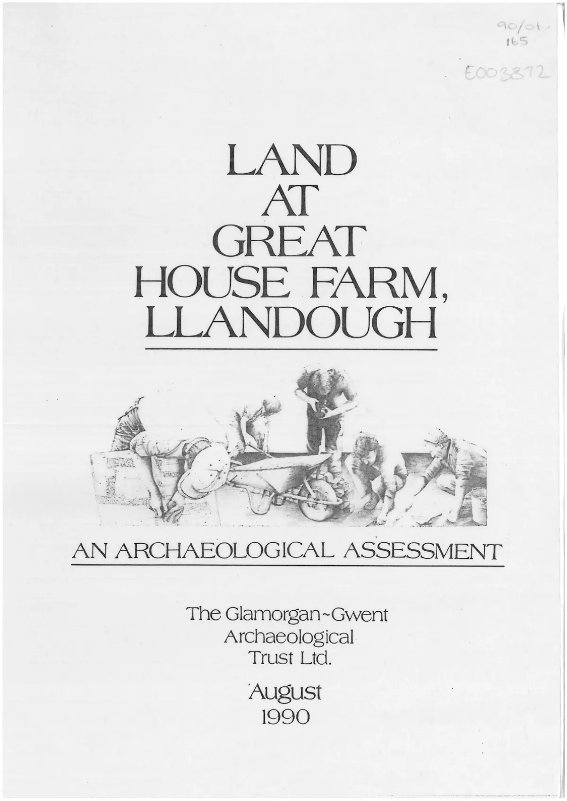

GHF-E106-R95-A1 partial
GGAT assessment of Great House Farmhouse (filed August 1990)

Transcript
LAND AT GREAT HOUSE FARM, LLANDOUGH ' # hy, 4 a Fr V = | 3S / oS ze 3 he SAE teh AN ARCHAEOLOGICAL ASSESSMENT The Glamorgan~Gwent Archaeological Trust Lid. August 1990 LAND AL GREAT HOUSE FARM, LLANDOUGH AN ASSESSMENT OF THE ARCHAEOLOGICAL IMPLICATIONS OF REDEVELOPMENT AT THE SITE OF GREAT HOUSE FARM, LLANDOUGH The Glamorgan~Gwent Archaeological Trust Lid. August 1990 AN ASSESSMENT OF THE ARCHAEOLOGICAL IMPLICATIONS OF REDEVELOPMENT AT THE SITE OF GREAT HOUSE FARM, LLANDOUGH 1) INTRODUCTION AND ACKNOWLEDGEMENTS Following the demolition of Great House Farm, Llandough in December 1988 the Glamorgan-Gwent Archaeological Trust (GGAT) entered into discussion with Debenham Tewson, agents for the site owners B P Properties Ltd, on the possible archaeological implications of redevelopment. The Trust, in its capacity as archaeological advisor to the Vale of Glamorgan Borough Council (VGBC), informed the local planning authority of the archaeological sensitivity of the site, and also kept in close contact with the Llandough Community Council, who initially contacted the Trust about the redevelopment. It was agreed that the potential archaeological interest should be
Read more
considered in the light of Welsh Office planning guidance and the County and Local Plans. Accordingly the VGBC determined that, in granting outline planning consent, 'no development shail take place until a field evaluation survey and archaeological assessment Pain nid has been carried out by a qualified archaeologist to the sa sfaction of Ene Local Planning Authority’ and that ‘the detail pl Ful to the results and findings of the archaeological investigations’. A <hres month time-limit was set for the archaeological work, and on the recommendation of Morgan Bruce, Solicitors for Debenham Tewson, it was agreed that the report should be completed as soon as possibile thereafter. B P Properties commissioned GGAT to undertake the fieldwork and the repert of which this introduction forms a part Tt will be evicent therefore that GGAT has throughout played a dual roie; on the one hand it has advised the Local Planning Authority, and on the other provided comparable advice to the applicant. It should be stressed that GGAT made this clear to both parties at the outset, in order that either of them could seek alternative qualified advice if it was felt a conflict of interest might arise. The assistance of a number of individuals in the above organisations is gratefully acknowledged by GGAT. In particular Mr Joy of Debenham Tewson, Messrs Dylan and Maitland Evans of ¥YGBC, Mr Cann of Morgan Bruce and Mr Egan of Llandough Community Council! have all afforded every co-operation to GGAT. 2) THE REDEVELOPMENT SITE (Fig 1) The redevelopment site occupies an irregula area to the north and east of St Dochdwy's church and is centred 7331] are demarcated by the break in siorce apo marth, by adjacent housing ‘to the north Llandough Hill, the churchyard 4 south. The northern area farmho is a i east sector si the watercourse a FORMER BRICKWORKS \ SITE N Great House Farm Wales & West _ Housing Association Os ae ee ee 100m Fig 1: Great House Farm, Llandough. Location of re-development site. substrate is of lias limestone and liassic clays, the latter being prominent near the upper part of the geciogical stratigraphy 3) ARCHAEOLOGICAL BACKGROUND AND POTENTIAL es wD ow r. wu oO > The church of St Dochdwy and the surrounding a considerable archaeological interest. The churchyard is likely to be on the site of an earlier foundation, perhaps dating back to the seventh century AD (Davies 1978). The cross shaft to the south of the west end of thec the tenth or eleventh century and is of a scale and style wh an important religious site (RCAHMW 1976, Inv No 828). To the south of the church an Iron Age farmstead, Roman cemetery, medieval monastic grange, late medieval village and pos mill and farm are known to have existed (OQwen-John ) presence of a Norman earthwork castle is presu Cark Age Prior to the assessment the pri: the redevelopment site its an cwnership dispute ana the 5 in 1988 the building was i ! hold a certain amount of inf summary, although doth structy DI century date, ‘the farmhouse may have parts of a seventeenth century house reconstruction. v oO Hee > @ D> @ — cs “oO @ oo © r=] oO oO 5 Ae) oO fe “i » a % 2% o- 1 0 w PEAR). ST 16817334 (WR. LLAWVOUGH, HOUS# FARM, GREAT Beam medium chamfered with Beams narrow chamfered. rounded stop. Ogee stops with torus, Beam narrow chamfered, ogee stops. A B Cc XVIII cent. Late XVII cent. purty Aq paonpoidos \ . \ Thomas December 1988, Scale: 1/100 “(M)JWHYOU pue sewoyy fH Jo uorsstwied wey ay} Jo Aaaing *y8nopueyy ‘wsey asnopyy 7eaI5 Z 814 The seventeenth century phase is associated with the Vaughan Family, the nineteenth century work with the Bute Estate. A number of architectural features were recorded in situ in 1974, (Fig 2) and others were observed in the rubble following demolition. Sherds of twelfth to fourteenth century pottery were recovered by E J Beare in 1962-3 on the slope immediately north-east of the Great House, while it is likely that some medieval ironwork which is held by the National Museum of Wales was discovered under the rear wing c 1880 (RCAHMW 1988). In addition to the recorded evidence noted above there was potential for further archaeological interest. The possibility that deposits relating to the early monastic settlement might survive in this area could not be ruled out, and it was possible that the churchyard may formerly have been more extensive. Although the main focus of Iron Age and Roman activity appeared to lie to the south it was possible that further evidence might have survived in this area. A medieval well, Ffynnon y Drindod, was originally lecated to the north of the church, and although its exact position is unknown it may have been located within the development site (RCAHMW 1988). 4) ARCHAEOLOGICAL FIELDWORK: OBJECTIVES AND METHODOLOGY The aim of the archaeological fieldwork was two-fold. In the first instance the investigation was aimed at establishing whether deposits relating to any of the features described in 3 above ‘or indeed any other type of archaeological activity) were present. The second aim was to assess the likely impact of redevelopment on the identified archaeological interests and to recommend to B P Properties methods by which these interests could best be protected. In addition to the fieldwork other relevant sources (eg, cartographic) would be consulted as appropriate. In view of the size and character of the development site it was decided that the most appropriate way to test the archaeological potential of the site was by a series of machine cut trenches, the position of which was determined either by the likelihood of archaeological deposits being encountered (eg, near the churchyard wall), or at random. It was agreed that the trenches should mostly be cut to the level of the substrate, but in some areas this proved impractical. The machine trenches were closely observed and subject to basic archaeological recording. The system of machine trenching was in effect a compromise between a more extensive assessment of the archaeological potential of the site, and the pre-existing state of knowledge, which in this case was insufficient to enable informed archaeological decisions to be taken. The results therefore give a much more reliable indication of the likely archaeological implications of redevelopment, yet by their nature cannot provide total assurance on the presence and value of archaeological deposits across the development site as a whole.
Artifact description
Confirms 1988 listing assessment rejected the property, provides two photographs, states no further electronic records held, and continues a paper-file search.
| Catalogue ID | GHF-E106-R95-A1 |
|---|---|
| What it is | PDF document from Welsh Government / Cadw. Attached to an email received on 21 May 2026, their reference ATISN 27021. 16 pages. |
| From | Welsh Government / Cadw |
| Email received | 21 May 2026 |
| Their reference | ATISN 27021 |
| Pages | 16 |
| File | 1990-08-xx - Great House Farmhouse, Llandough - GGAT Assessment.pdf (6352 KB) |
| State | Read |
Our integration
An undated GGAT assessment of Great House Farmhouse, filed as August 1990, sent by Cadw with the 1988 survey photographs. The covering email confirms that the 1988 listing assessment did not recommend the house, and that a search of paper files was continuing.
Why it matters: it is one of the few documents on file written after the demolition that describes the site. It is the closest thing so far to the archaeological record of what was there.
What cuts against the case: an assessment made after demolition can only record what was left. Its date also places it after the 1988 decision, so it cannot show what that decision was based on.
Related: GHF-E106-R101-A1 — ATISN 27021 Review Ressponse.pdf · GHF-E106-R37-A1 — ATISN 27021 response letter · GHF-E106-R37-A2 — ATISN 27021 doc 1: farmhouse survey photo, 29 July 1988 · GHF-E106-R37-A3 — ATISN 27021 doc 2: barn survey photo, 29 July 1988 · GHF-E106-R97-A1 — Cadw survey photograph: barn, 29 July 1988 · GHF-E106-R98-A1 — Cadw survey photograph: farmhouse, 29 July 1988 · GHF-E106-R99-A1 — Internal Review Acknowledgement Letter.pdf · The covering email · What They Don’t Say: WTDS-5c5b715a-1, WTDS-5c5b715a-2, WTDS-5c5b715a-3, WTDS-5c5b715a-4 · EV-0489 in the evidence catalogue · Timeline · Disclosure Dartboard